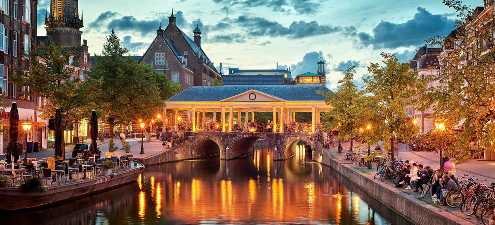

Rich History 📜
Stroll through the historic center, where every street tells a story. Visit the many museums and monuments that reflect Leiden's rich past.
Leiden is a city brimming with history, culture, and excitement. Whether you’re wandering its picturesque streets, exploring its museums, or enjoying a vibrant festival, there’s always something to discover.
Stroll through the historic center, where every street tells a story. Visit the many museums and monuments that reflect Leiden's rich past.
Experience the lively arts scene with galleries, theaters, and street performances. Engage with the local community through festivals and events.
Indulge in Dutch delicacies and international cuisine at the numerous cafes and restaurants. Don’t forget to try the local herring!
Join us for the annual celebration of Leiden's liberation with parades, concerts, and a festive atmosphere.
Don’t miss out on this prestigious film festival showcasing global cinema, workshops, and exciting screenings.
Jazz lovers unite! Enjoy a week filled with incredible performances from local and international jazz musicians.
Have questions or want to share your Leiden experiences? We'd love to hear from you!
Contact Us